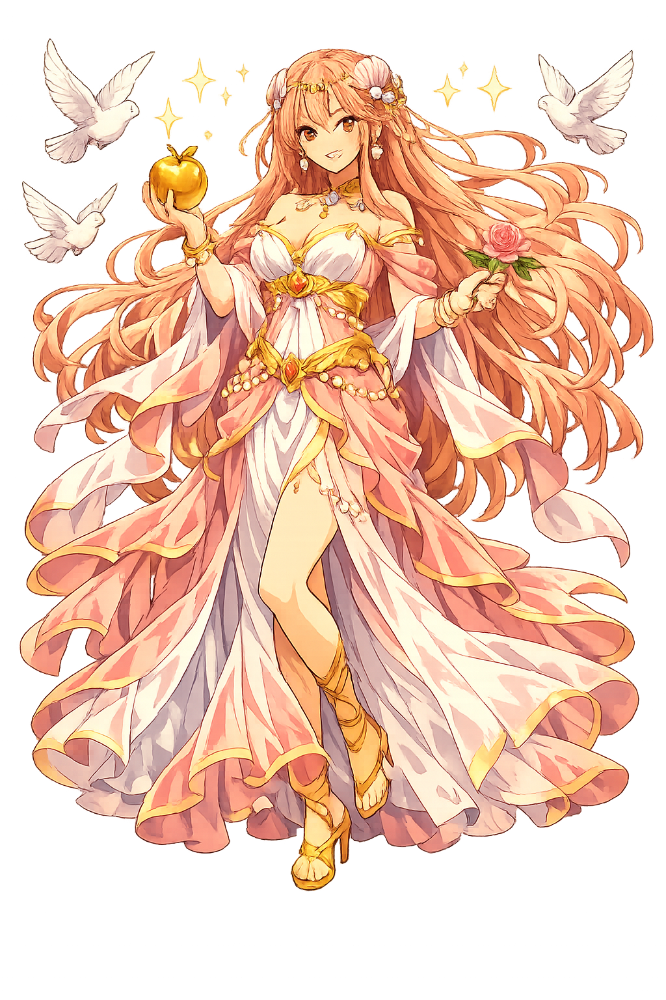

The Authentic Orthography
Love, Beauty, Pleasure · Born of sea foam (from ἀφρός)

Why Aphrodítē.com is the correct form
Ἀφροδίτη
The name in its original Greek form. Aphrodítē (Ἀφροδίτη) is attested as love, beauty, pleasure — “Born of sea foam (from ἀφρός)”. Its aspirated consonants, long vowels, and acute accents carry the full phonetic and orthographic weight of the source tradition.
aphrodite
Reduced to plain aphrodite, the name loses everything that made it specific: aspirated consonants, long vowels, and acute accents. What remains is an ASCII string that machines can parse but that no longer speaks with its original voice.
Aphrodítē
The Unicode restoration recovers what ASCII flattened. Aphrodítē restores aspirated consonants, long vowels, and acute accents, returning the name to its original written dignity. The domain encodes to Punycode, but the browser displays the truth.
Aphrodítē.com → xn--aphrodt-dza75a.com
The non-ASCII characters in Aphrodítē are encoded while the ASCII remains visible. To the DNS, it is Punycode. To humanity, it is Aphrodítē.
How Aphrodítē was spoken
Love, Beauty, Desire, and Fertility
Aphrodítē is the goddess of desire in all its forms: sexual love, beauty, fertility, and the longing that binds mortals and gods. She is not a youthful virgin but a sovereign power who can make Zeús himself fall in love against his will.
The force that overwhelms reason and unites bodies, whether in marriage or adultery.
The visible form of desire; her presence makes the ordinary radiant.
She guarantees the continuity of life through sexual union and the growth of crops.
Even gods and heroes submit to her; no one is immune to desire.
Stories of Aphrodítē
Aphrodítē's myths explore the power and danger of desire. She can raise a mortal to divine love or destroy a city for an insult.
When Kronos castrated Ouranos and threw his genitals into the sea, white foam gathered around them. From this foam Aphrodítē arose, first at Cythera and then at Cyprus. The Theogony calls her 'foam-born' and 'Cypris,' and her birth unites violence and beauty in a single image: love emerges from wounded power.
Eris threw a golden apple inscribed 'to the fairest' among the goddesses. Paris awarded it to Aphrodítē after she promised him Helen, the most beautiful mortal woman. That promise launched the Trojan War. The myth makes desire the engine of history: beauty, when contested, becomes catastrophe.
Aphrodítē loved the mortal youth Adonis, whom Persephonē also desired. Zeús decreed that Adonis spend part of the year with each goddess — another vegetative myth of death and return. His blood became the anemone, and his death was mourned in women's rites across the Greek world.
When Hippolytus, son of Theseus, rejected love and worshipped only Artemis, Aphrodítē caused his stepmother Phaedra to desire him. The resulting shame and lies led to Hippolytus's death. The myth warns that to deny desire entirely is to invite its most destructive forms.
Aphrodítē is the only Olympian whose power no one can refuse. Wisdom, strength, and even fate can be contested; desire simply arrives. The Greeks did not moralize this. They made her beautiful, dangerous, and sovereign. Her myths show that love can create harmony or ruin cities, and usually both.
Enter Extended Lore